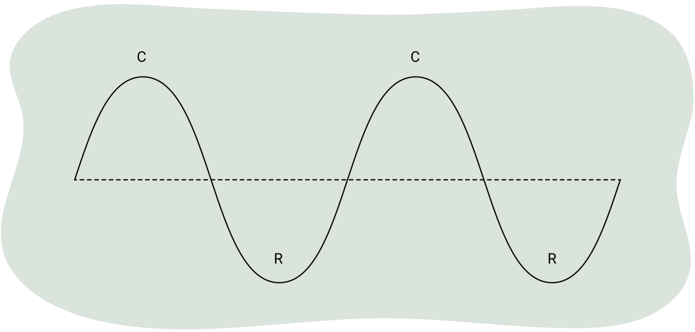
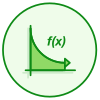
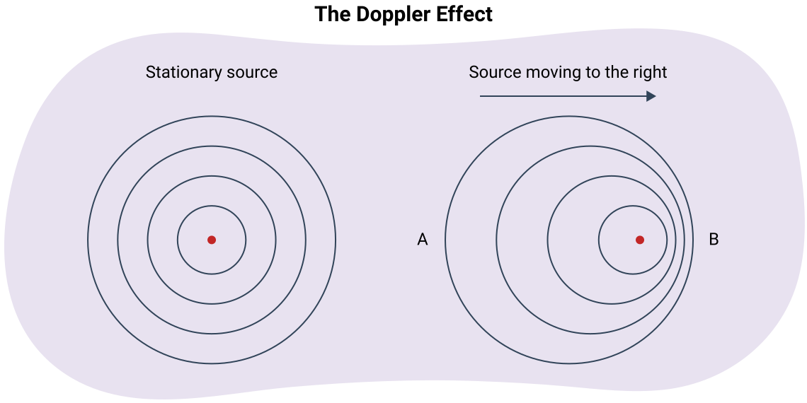
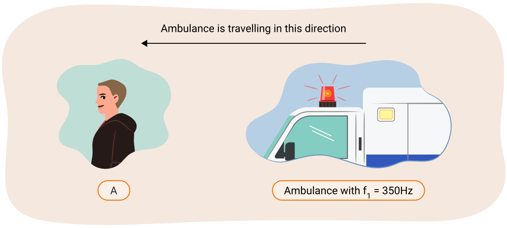
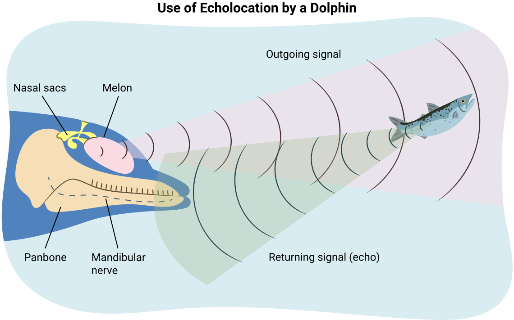
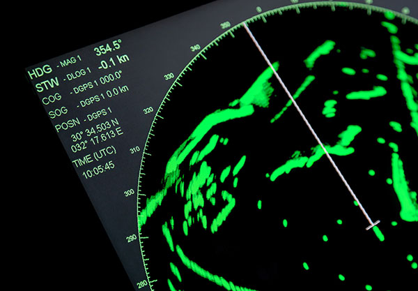
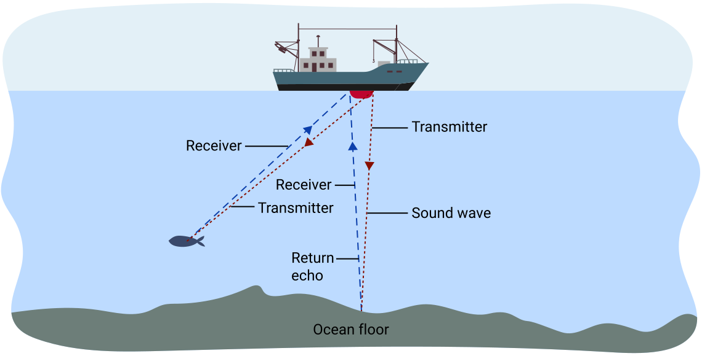

노트
어휘: 음파의 물리학과 관련된 다음 용어들을 노트에 기록하세요. 학습 활동을 완료하면서 각 어휘의 정의와 핵심 용어를 채워 넣으세요.
- 소음 (noise)
- 진동수 (frequency)
- 헤르츠 (hertz)
- 데시벨 (dB)
- 로그 척도 (logarithmic scale)
- 도플러 효과 (Doppler effect)
- 밀도 (density)
- 초음파 (ultrasonic)
일상 속의 소리
많은 인간과 다른 동물들은 서로 의사소통하고 환경에 대한 중요한 정보를 얻기 위해 소리를 사용합니다. 소리는 의도적으로 조합되어 음악을 만들어 우리의 삶을 풍요롭게 할 수 있습니다. 그러나 기계에서도 소리가 발생하며, 이러한 소리는 사람과 동물 모두에게 불쾌감을 줍니다. 많은 작업 환경에서 소리의 세기가 너무 커져 건강 문제가 될 수 있습니다. 소음성 난청은 큰 소리에 장시간 노출되어 발생할 수 있습니다. 큰 소리가 발생하는 환경에서 일하는 사람들은 노출을 최소화하기 위한 예방 조치를 취해야 합니다.
이어폰을 통해 음악을 재생하는 휴대용 음악 재생 장치(스마트폰 등)도 청력 손실이 발생하지 않도록 안전한 범위 내의 음량으로 재생해야 합니다.
소리는 많은 방식으로 우리의 삶에 영향을 미칩니다. 하지만 소리가 실제로 어떻게 작동하는지 알고 있나요? 음파의 속도를 결정하는 것은 무엇일까요? 산업과 제조에서 소리의 응용이 있으며, 의사들이 부상 치료에 소리를 사용한다는 것을 알고 있었나요? 이 학습 활동에서는 소리의 주요 원리와 몇 가지 응용에 대해 배울 것입니다.
직접 해보기!
탐구: 실 전화기 활동
기체, 액체, 고체 등 다양한 매질을 통해 소리가 어떻게 전달되는지 탐구할 것입니다. 사실, 소리가 액체와 고체에서 얼마나 잘 전달되는지 놀랄 수 있습니다. 다음 실 전화기 활동을 살펴보고, 가능하다면 직접 해 보세요.
활동을 시작하기 전에 다음 질문들에 대해 생각해 보세요:
- 별도의 방에 있는 두 사람이 서로의 소리를 들을 수 있다고 생각하나요?
- 소리를 내기 위해 무엇이 진동하고 있나요?
- 어떤 메커니즘이 사람들에게 소리를 듣게 해 주나요?
준비물
- 큰 종이컵 2개 (일회용 플라스틱 컵도 가능)
- 클립 또는 이쑤시개 2개
- 길이 약 3~10미터의 면실 또는 낚싯줄
- 조용한 장소
- 상대방 1명
절차
- 각 컵 바닥 중앙에 작은 구멍을 뚫으세요 (플라스틱 컵의 경우 못이나 다른 뾰족한 도구가 필요할 수 있으므로 이 단계를 수행할 때 주의하세요).
- 실의 각 끝을 각 컵 바닥을 통해 꿰세요.
- 각 컵 바닥에 클립이나 이쑤시개를 놓고 실의 느슨한 끝을 그 주위에 묶으세요 (클립이나 이쑤시개는 실이 컵 바닥을 통해 빠져나가는 것을 방지하기 위한 것입니다).
- 컵 하나를 대화 상대에게 주고 하나는 직접 잡으세요.
- 컵을 연결하는 실이 곧고 팽팽해질 때까지 천천히 멀어지세요.
- 컵을 귀에 대고 상대방이 자신의 컵에 대고 말하거나 소리를 내게 하세요 (서로 가까이 서 있는 경우 비교적 조용하게 하되, 속삭임보다는 큰 소리를 내도록 하세요).
파동으로서의 소리
횡파와 종파의 차이를 기억하나요?
소리는 종파이며, 빠르게 진동하는 물체에 의해 만들어집니다.
탐구해 보기!
다음 영상은 소리굽쇠가 소리를 낼 때 진동하며, 이 진동이 물과 접촉하면 왜곡/감쇠되어 윙윙거리는 소리를 내는 것을 보여줍니다.
소리는 주기적 운동의 한 예입니다
진자만이 주기적 운동의 유일한 예는 아닙니다. 파동이 지나갈 때 위아래로 흔들리는 배, 스프링에 달린 물체가 앞뒤로 움직이는 것, 시계의 초침 등 수많은 예가 있습니다. 이 단원에서는 주요 주기적 운동 유형으로서 소리와 소리를 만드는 방법에 집중할 것입니다.
빠르게 진동하는 물체는 공기 중에 파동을 만들어내며, 이 파동은 모든 방향으로 이동합니다. 소리가 들리는 것은 파동이 사람의 귀에 도달하여 고막을 진동시키고 청각 신경을 자극하기 때문입니다.
복습
인간이 소리를 듣고 측정하는 방법에 대해 알아보려면 다음 자료 청각의 원리(새 창에서 열림)를 참조하여 귀의 해부학적 구조를 복습하세요.
탐구해 보기!
다음 영상은 인간의 청각이 어떻게 작동하는지에 대한 추가 정보를 제공합니다.
때때로 소리가 충분히 크지 않아 감지되지 않을 수 있고, 다른 경우에는 소리가 너무 강해서 사람들을 놀라게 하거나 부상을 입힐 수도 있습니다. 소리의 세기는 데시벨(dB)로 측정됩니다.
또한 사람들은 모든 진동수를 들을 수 없습니다. 내이의 유모 세포가 시간이 지남에 따라 퇴화하는 경향이 있으므로, 젊은 사람들은 보통 나이 든 사람들보다 더 넓은 범위의 진동수를 들을 수 있습니다. 젊은 사람은 20 Hz에서 20,000 Hz 범위의 진동수를 들을 수 있습니다. 20,000 Hz보다 높은 진동수를 초음파라 하고, 20 Hz보다 낮은 진동수를 초저주파라 합니다.
보청기는 귀 손상을 해결하는 한 가지 방법입니다. 보청기는 개인의 필요에 맞는 특정 진동수를 증폭하도록 프로그래밍할 수 있습니다.
때때로 사람의 내이가 넓은 범위의 진동수를 감지하지 못할 수 있습니다. 이러한 종류의 청력 손실에서는 인공 와우가 귀 자체를 우회하여 전자 신호를 청각 신경에 직접 보낼 수 있습니다.
탐구 – 소리의 진동수
활동
이어폰 음악과 같은 지속적인 큰 소리 에너지에 노출되면 청력 손실이 발생할 수 있습니다. 청소년은 20 Hz에서 18 kHz 사이의 진동수를 인지할 수 있어야 합니다. 자신이 인지할 수 있는 진동수를 알아보세요.
탐구해 보기!
다음 영상은 다른 높낮이의 소리가 어떻게 들리는지 보여줍니다.
소리의 세기
이제 소리의 세기 수준과 이러한 수준에 가까운 음원들을 살펴보겠습니다.
| 음원 | 세기 수준 (dB) |
|---|---|
| 인간 청각의 문턱값 | 0 |
| 속삭임 | 30 |
| 일반 가정 | 50 |
| 두 사람의 대화 | 60 |
| 진공청소기 | 80 |
| 집에서의 큰 음악 | 90 |
| 록 콘서트 | 110 |
| 통증 문턱값 | 130 |
소음과 소음 공해
여러분은 소음이 사회와 환경에 미칠 수 있는 영향에 대해 이미 생각해 보았습니다. 이제 소음으로 정의할 수 있는 것이 무엇인지 알아볼 것입니다. 어떤 사람들은 큰 음악을 듣고 단지 소음이라고 말하지만, 다른 사람들은 자신이 좋아하는 노래를 듣고 있을 수 있습니다. 그렇다면 사회는 소음을 어떻게 정의할 수 있을까요? 이것은 전적으로 개인적 의견의 문제입니다.
모든 형태의 원치 않는 소리는 소음으로 간주됩니다. 그렇다면 소음 공해란 무엇일까요?
소음 공해는 인간의 활동이나 자연의 균형을 방해하는 소리입니다. 인간에게 소음 공해는 심리적 문제뿐만 아니라 귀의 기능에 실질적인 물리적 손상을 일으킬 수 있습니다. 많은 연구에서 소음 공해의 증가로 인해 더 높은 수준의 스트레스, 좌절감, 공격성이 보고되었습니다. 집중력 부족과 전반적인 주의력 결핍은 이러한 연구들에서 잘 기록되어 있습니다. 소음 공해는 동물들의 정상적인 행동도 방해할 수 있으며, 가능한 경우 다른 지역으로 이동하게 만들 수 있습니다.
소음 공해의 문제는 조용한 주기적 소리의 간헐적 불쾌감보다는 대부분 소리의 세기 때문입니다. 인간의 귀가 감지할 수 있는 소리 세기의 범위는 매우 넓습니다. 조용한 방에서 핀이 떨어지는 소리부터 수 킬로미터 떨어진 제트 엔진 소리까지 들을 수 있습니다.
이 넓은 범위의 소리 세기를 다루기 위해 데시벨 척도가 발명되었습니다. 이 척도에서 인간의 귀가 감지할 수 있는 가장 낮은 소리의 세기인 청각의 문턱값에는 0 데시벨(dB)의 값이 부여됩니다. 미터법 접두사를 고려하면, 이것이 실제로 다른 단위(벨)의 10분의 1(데시-)에 해당한다는 것을 알 수 있습니다. 나뭇잎이 바스락거리는 소리처럼 10배 더 강한 소리에는 10 dB의 데시벨 수준이 부여됩니다. 청각의 문턱값보다 1000(103)배 강한 속삭임은 30 dB이 부여됩니다. 100만 배(106) 강한 일반 대화는 60 dB이 부여됩니다. 기본적으로 소리가 10배 더 강해지면 데시벨 수준은 10 증가합니다.
예시: 소리 1이 50 dB이고 소리 2가 80 dB이면, 소리 2는 소리 1보다 30 dB 높으므로 103 = 1000배 더 강합니다.
데시벨 척도로 측정되는 이 소리의 특성을 음량이라고 합니다. 인간은 120 dB 이상에 노출되면 실제로 물리적 고통을 느낍니다. 매우 큰 소리에 장시간 노출되거나, 극도로 큰 소리에 짧은 시간 노출되면 일시적 또는 영구적 청력 손실을 초래할 수 있습니다.
소음 공해를 줄이는 한 가지 방법은 소리를 반사하거나 전달하는 대신 흡수하는 재료를 사용하여 건물을 짓는 것입니다. 이렇게 하면 건물 내부의 소리 수준이 감소하고 소음 공해의 영향이 줄어듭니다. 그러나 이 해결책은 외부에 있는 사람들에게는 도움이 되지 않습니다. 외부 소음에 대한 한 가지 해결책은 귀마개를 착용하는 것으로, 단순히 소리가 귀에 들어가는 것을 차단하여 음량을 줄입니다. 물론, 그 사람은 주변의 다른 소리에 대한 인식이 낮아지므로, 이는 단점이거나 안전 문제가 될 수 있습니다.
첨단 기술 해결책으로는 소음 제거 헤드폰을 사용하는 것이 있습니다. 이 헤드폰은 귀 위에 놓이며 작은 마이크가 부착되어 있습니다. 마이크가 소리를 감지하면 헤드폰은 정확히 같은 소리를 생성하되 완전히 위상을 반대로 바꿉니다. 이렇게 하면 환경의 소리와 헤드폰의 소리가 상쇄 간섭합니다. 헤드폰을 착용한 사람은 아무 소리도 감지하지 못합니다. 이러한 유형의 기술은 일반적으로 비행기의 일등석 승객이나 매우 큰 소음을 견뎌야 하는 근로자들이 사용합니다.
직접 해보기!
다음 문제를 풀어 이해도를 확인하세요.
공기 중에서의 소리 전달
소리는 역학적 파동으로, 이동하기 위해 매질이 필요합니다. 이는 소리가 진공을 통해 이동할 수 없다는 것을 의미합니다.
탐구해 보기!
다음 영상은 소리가 전파(이동)하기 위해 매질이 필요하다는 것을 보여줍니다. 장치에서 공기가 천천히 제거되면 소리가 더 이상 들리지 않습니다.
소리가 공기를 통해 어떻게 이동하는지 더 명확하게 설명하기 위해, 일반적인 소리굽쇠를 생각해 봅시다.
소리굽쇠에는 두 개의 가지(갈래)가 있어 타격하면 앞뒤로 움직입니다. 가지가 움직이면 공기 중의 입자들을 더 가까이 밀어 밀(압축)이라 불리는 것을 만들고, 또한 공기 중 입자들로부터 뒤로 당겨져 입자들이 더 퍼지게 하여 소(희박)라 불리는 것을 만듭니다.
이 공기 입자들은 평형 위치에서 벗어나 이웃 입자들과 부딪혀 그들도 움직이게 합니다. 이러한 공기 입자 운동 패턴은 모든 방향에서 발생하며, 이것이 다음 그림에 나타난 것처럼 음파가 공기를 통해 이동할 수 있게 하는 것입니다.
소리는 종파입니다
공기 입자들은 파동의 운동 방향과 평행하게 앞뒤로만 움직이므로, 이것은 종파를 나타냅니다. 밀(압축)에서는 입자들이 빽빽하게 모여 있고 압력이 높습니다. 소(희박)에서는 입자들이 퍼져 있고 압력이 낮습니다.

음파를 일련의 점(입자를 나타냄)으로 표현하는 대신, 고압 영역과 저압 영역을 나타내는 다른 방법을 사용할 수 있습니다 – 매질을 통한 파동의 운동에 의해 생성된 압력 그래프를 사용할 수 있습니다. 음압파를 횡파로 표현하면, 고압 영역(그림에서 C로 표시된 밀)을 마루로, 저압 영역(그림에서 R로 표시된 소)을 골로 나타낼 수 있습니다. 따라서 이 그림은 음파를 표현하는 더 간단한 방법을 보여줍니다.
소리의 인지
소리가 파동이므로 학습 활동 1.1의 파동과 관련된 모든 용어와 개념이 소리에도 적용된다는 것을 알았을 것입니다. 더 큰 소리는 공기 입자의 더 큰 진폭의 진동을 의미합니다. 더 높은 음높이의 소리는 더 높은 진동수의 진동을 나타냅니다. 소리는 또한 매질이 변하지 않는 한 일정한 속력으로 이동합니다.
음파의 진동수는 소리의 음높이와 관련이 있습니다. 음높이는 듣는 사람이 인지하는 것입니다. 예를 들어, 고주파 소리는 높은 음높이의 소리로 인지되고, 저주파 진동은 낮은 음높이의 소리를 만듭니다.
각 소리굽쇠에는 특정 진동수가 있습니다. 256 Hz 소리굽쇠는 가지가 초당 256회 앞뒤로 진동한다는 의미입니다. 512 Hz 소리굽쇠는 가지가 초당 512회 앞뒤로 진동합니다. 512 Hz 소리굽쇠가 256 Hz 소리굽쇠보다 초당 더 많이 앞뒤로 움직이므로 더 높은 음높이를 가집니다.
공기 중 음속
정밀한 실험에 의하면 소리는 정상 압력과 0°C에서 332 m/s로 이동합니다. 공기의 온도가 높으면 음속이 증가합니다. 온도가 1°C 증가할 때마다 음속은 0.59 m/s 증가합니다.
정상 압력에서의 공기 중 음속(v)은 다음 공식을 사용하여 계산할 수 있습니다:
공식

여기서 T는 섭씨 온도입니다.
참고: 이 공식은 소리가 공기를 통해 이동할 때만 사용할 수 있습니다. 예를 들어 물과 같은 다른 매질에서 이동하는 경우에는 이 공식을 사용할 수 없습니다.
예제: 음속 계산
온도가 18°C일 때 공기 중 음속을 계산하세요.
| 단계 | 풀이 |
|---|---|
| 주어진 값 |
온도 |
| 구하는 값 | |
| 공식 |
주어진 값과 구하는 값을 기록했으므로, 두 항목을 모두 참조하는 공식을 노트에서 찾을 수 있습니다. 아직 선택지가 많지 않지만, 이 과정을 통해 더 큰 공식 참조표를 만들게 될 것입니다. 음속 공식은 속력과 온도를 모두 포함하므로, 그 공식을 사용해야 합니다. |
| 풀이 | |
| 결론 |
음속은 340 m/s입니다. (유효 숫자 2자리로 반올림.) |
예제: 소리의 파장 구하기
350 Hz 소리굽쇠가 온도가 –20.0°C인 실외에서 울렸습니다. 소리의 파장은 얼마인가요?
첫 번째 단계는 음속을 구하는 것입니다.
| 단계 | |
|---|---|
| 주어진 값 | |
| 구하는 값 | |
| 공식 | |
| 풀이 | |
| 결론 | 음속은 320.2 m/s입니다. (이것은 문제의 최종 결론이 아니므로 유효 숫자 3자리로 반올림할 필요가 없습니다.) |
두 번째 단계는 파동의 기본 방정식을 재배열하여 파장을 구하는 것입니다.
| 단계 | |
|---|---|
| 주어진 값 | |
| 구하는 값 | |
| 공식 | |
| 풀이 | |
| 결론 | 음파의 파장은 0.91 m입니다. |
예제: 기온 구하기
음속이 360 m/s일 때 온도는 얼마인가요?
| 단계 | |
|---|---|
| 주어진 값 | |
| 구하는 값 | |
| 공식 | |
| 풀이 | |
| 결론 | 기온은 47 °C입니다. (답은 유효 숫자 2자리로 주어집니다.) |
직접 해보기!
다음 문제를 풀어 이해도를 확인하세요.
파동은 같은 매질에 머무는 한 일정한 속력으로 이동한다는 것을 기억하세요.
탐구해 보기!
두 가지 다른 파동 펄스가 있는 다음 영상을 살펴보세요.
이전 영상에서 초기 진동의 진폭이나 진동수에 관계없이 파동 펄스가 이동하는 시간은 항상 같다는 것에 주목하세요.
소리의 경우, 매질의 변화는 음속에 급격한 변화를 일으킬 수 있습니다.
다양한 물질에서의 소리 전달
소리는 고체와 액체에서도 전달됩니다. 예를 들어, 수중에서 수영할 때도 여전히 소리를 들을 수 있습니다.
번개 폭풍 동안 먼저 멀리서 번개의 섬광을 관찰한 후 소리를 듣게 됩니다. 이는 번개의 빛이 빛의 속력(300,000,000 m/s)으로 이동하는 반면, 음속은 훨씬 느리기 때문입니다. 사람들은 보통 소리가 느리다고 생각하지 않습니다. 사실, 빛의 속력과 비교할 때만 느린 것입니다.
| 상태 | 물질 | 음속 (m/s) |
|---|---|---|
| 기체 | 이산화탄소 | 258 |
| 산소 | 317 | |
| 질소 | 338 | |
| 헬륨 | 970 | |
| 수소 | 1270 |
| 상태 | 물질 | 음속 (m/s) |
|---|---|---|
| 액체 | 알코올 | 1241 |
| 바닷물 | 1470 | |
| 민물 | 1493 | |
| 수은 | 1452 |
| 상태 | 물질 | 음속 (m/s) |
|---|---|---|
| 고체 | 소나무 | 3320 |
| 단풍나무 | 4110 | |
| 강철 | 5050 | |
| 유리 | 5050 | |
| 알루미늄 | 5104 |
고체, 액체, 기체에서의 음파
물질의 입자 이론에 따르면 모든 물질은 작은 입자로 이루어져 있습니다.
- 고체에서 이 입자들은 서로 강하게 끌어당기며 고정된 배열로 가까이 붙어 있습니다.
- 액체에서는 인력이 그다지 강하지 않고, 약간 더 떨어져 있으며 자유롭게 움직일 수 있습니다.
- 기체에서는 입자 사이에 거의 인력이 없습니다. 입자들은 멀리 떨어져 있고 자유롭게 떠다닐 수 있습니다.
이것이 왜 소리가 고체에서 가장 빠르고, 액체에서 더 느리며, 기체에서 가장 느린지를 어떻게 설명할까요? 더 자세히 알아보려면 다음 내용을 살펴보세요.
생각해 보기
1. 소리가 가장 빠르게 이동하는 물질의 상태는 무엇인가요?
고체입니다.
2. 온도가 증가하면 공기 중 음속은 어떻게 되나요? (음속 공식을 생각해 보세요.)
속력이 증가합니다.
3. 수은은 매우 밀도가 높은 액체이고, 바닷물은 밀도가 그다지 높지 않습니다. 밀도는 음속과 어떤 관계가 있나요?
밀도가 증가하면 속력이 증가합니다. 밀도가 감소하면 속력이 감소합니다.
도플러 효과
지나가는 응급 차량의 사이렌 소리를 들어본 적이 있나요? 차량이 다가올 때 사이렌 소리가 더 높은 음으로 들리고, 멀어질 때 더 낮은 음으로 들린다는 것을 알았을 것입니다. 듣는 사람의 관점에서 음원이 다가올 때와 멀어질 때 사이렌의 겉보기 진동수가 변합니다. 음원의 운동으로 인한 이러한 진동수의 변화를 도플러 효과라고 합니다.
도플러 효과를 이해하기 위해 다음 그림을 살펴보겠습니다. 첫 번째 그림은 정지해 있는 음원을 보여줍니다. 파동은 음원에서 모든 방향으로 일정한 속력으로 이동합니다. 이 파동들은 다음 그림에 보이는 것처럼 균일한 간격을 가집니다.

두 번째 그림은 점 A에서 멀어지고 점 B를 향해 이동하는 음원을 보여줍니다. 소리는 여전히 모든 방향으로 일정한 속력으로 이동하지만, 음원도 이동하고 있습니다. 점 A에서의 파동은 음속에서 vsource(음원의 속력)를 뺀 속력으로 음원에서 멀어지고 있습니다. 하나의 파동 봉우리가 방출되고 다음 것이 방출될 때쯤이면 음원은 이미 이동한 상태이므로, 파동은 더 이상 동심원이 아닙니다. A에 있는 관측자의 관점에서 이는 파동이 늘어나 파장이 증가하고 진동수가 감소하게 합니다(속력이 일정하므로). 따라서 음원 앞의 파면은 서로 더 가까워지고, 음원 뒤의 파면은 더 멀어집니다.
B를 향해 가는 파동은 더 높은 진동수를 가집니다. 이는 소리가 음원에서 멀어지는 동안 음원이 소리의 방향으로 향하고 있기 때문입니다. 음원 앞의 파동(위치 B)은 “밀집”되어 파장이 더 작습니다. 이 파동은 이전보다 더 자주 B에 있는 관측자의 고막에 도달하므로 진동수가 더 높아집니다. B에서 관측자는 사이렌을 더 높은 음으로 듣게 됩니다. 그림에 나타난 것처럼 A에서는 반대 효과가 발생합니다. 결과적으로, A에 있는 관측자는 음원이 멀어질 때 더 낮은 진동수를 듣게 되어 더 낮은 음이 됩니다.
움직이는 음원의 겉보기 진동수를 계산하는 공식은 다음과 같습니다:
공식
여기서 fsource 또는 f1은 음원의 정지 진동수이고, fobserved 또는 f2는 A 또는 B에 있는 관측자가 감지한 겉보기 진동수이며, vsound는 공기 중 음속이고, vsource는 음원의 속력입니다. 분모 vsound + vsource는 음원이 관측자로부터 멀어질 때 사용됩니다.
이 경우, 분모가 더 크므로 겉보기 진동수가 정지 진동수보다 낮아집니다. 분모 vsound – vsource는 음원이 관측자를 향해 다가올 때 사용됩니다. 이 경우, 분모가 더 작으므로 겉보기 진동수가 정지 진동수보다 높아집니다. 이 공식을 사용하려면 속력의 단위가 동일해야 합니다.
다음 표는 600 Hz의 진동수로 소리를 내는 음원이 다른 방식으로 움직일 때 어떤 일이 일어나는지 요약합니다.
| 음원의 움직임 | 음원이 만든 소리의 진동수 | 관측자가 듣는 진동수 |
|---|---|---|
| 관측자를 향해 이동 | 600 Hz | 600 Hz보다 높음 |
| 관측자로부터 멀어짐 | 600 Hz | 600 Hz보다 낮음 |
| 정지 | 600 Hz | 600 Hz |
음원의 진동수는 절대 변하지 않는다는 것을 인식하는 것이 중요합니다. 그것은 일정합니다. 관측자는 도플러 효과로 인해 다른 진동수, 즉 겉보기 진동수를 듣게 됩니다.
예제: 소리의 진동수 계산
기온이 12°C일 때 자동차가 고속도로를 27 m/s로 달리고 있습니다. 운전자가 도로변에 서 있는 사람을 지나갈 때 420 Hz의 경적을 울립니다. 자동차가 다가올 때와 멀어질 때 그 사람이 들을 수 있는 진동수는 얼마인가요?
| 단계 1 |
먼저 공기 중 음속을 구합니다. |
| 단계 2 |
f1 = 420 Hz (음원의 진동수), f2는 관측자가 듣는 진동수입니다. 음원이 다가올 때는 공식에서 빼기 부호를, 멀어질 때는 더하기 부호를 사용합니다. |
| 단계 3 |
다가올 때:
멀어질 때: |
| 단계 4 |
그 사람은 운전자가 다가올 때 460 Hz의 진동수를, 멀어질 때 390 Hz의 진동수를 듣게 됩니다. (유효 숫자 2자리로 답.) 음원이 관측자에게 다가올 때 진동수가 더 높게 들린다는 것을 알고 있으므로 이것은 타당합니다. |
직접 해보기!
다음 문제를 노트에 풀어 보세요.
1. 다음 그림에서 점 “A”에 있는 사람은 350 Hz보다 높은 진동수를 들을까요, 낮은 진동수를 들을까요? 그 이유는?

구급차가 관측자를 향해 이동하고 있으므로, 그들은 더 높은 진동수의 소리를 듣게 됩니다.
2. 그 사람이 350 Hz와 같은 진동수를 듣기 위해서는 구급차가 어떤 상태여야 하나요?
구급차가 정지해 있어야(움직이지 않아야) 합니다. 또는 구급차와 관측자가 정확히 같은 속력으로 같은 방향으로 이동하여 속력 차이가 없어야 합니다.
3. 자동차 경적의 진동수는 480 Hz이고 자동차는 25 m/s로 이동하고 있습니다. 공기 중 음속은 334 m/s입니다. 자동차가 관측자로부터 멀어질 때 관측자가 감지하는 겉보기 진동수를 구하세요.
주어진 값:
구하는 값:
공식:
풀이:
결론:
관측자는 450 Hz의 진동수를 감지하게 됩니다.
4. 직선 트랙의 레이싱 카가 홍보 행사 중 510 Hz 경적을 울립니다. 자동차는 42 m/s로 이동하고 온도는 28°C입니다. 자동차가 관측자를 향해 이동할 때 정지한 관측자에 대한 경적의 겉보기 진동수를 구하세요.
주어진 값:
구하는 값:
공식:
풀이:
먼저, 음속을 구합니다.
그 속력을 사용하여 도플러 효과를 적용합니다.
결론:
관측자는 580 Hz의 진동수를 감지하게 됩니다.
5. 트럭이 정지한 사람을 향해 이동하면서 450 Hz 경적을 울립니다. 그 사람은 465 Hz의 진동수를 듣습니다. 음속은 340 m/s입니다. 트럭은 얼마나 빠르게 이동하고 있나요?
주어진 값:
구하는 값:
공식:
풀이:
결론:
트럭은 11 m/s로 이동하고 있습니다.
음파의 응용
음파에는 많은 응용이 있습니다. 여러분이 배울 것들 중 일부는: 초음파, 음향학, 동물의 반향 정위, 메아리, 그리고 소나입니다.
초음파
초음파는 20,000 Hz 이상의 진동수를 가진 음파라는 것을 기억하세요. 이 때문에 인간의 귀에는 들리지 않습니다. 이 음파는 물질에 의해 흡수되거나 반사될 수 있는 에너지를 운반합니다. 초음파는 인체 내부 구조의 이미지를 생성하는 데 사용될 수 있습니다. 이 절차는 근본적으로 소나와 유사합니다. 변환기가 초음파를 방출하고 마이크가 반사된 파동을 감지합니다.
초음파는 피부와 같이 밀도가 낮은 인체 물질을 더 쉽게 통과하며, 파동의 에너지가 거의 반사되지 않습니다. 뼈와 같이 밀도가 높은 물질은 초음파를 더 쉽게 반사합니다. 컴퓨터를 사용하여 반사파를 이용해 거리를 계산하며, 이 과정으로 영상이 형성됩니다. 초음파는 영상을 형성할 때 부작용이 없기 때문에 X선(고에너지 빛의 한 형태)에 비해 추가적인 장점이 있습니다.
초음파는 부상과 질병을 치료하는 데에도 여러 형태로 사용될 수 있습니다. 고에너지 초음파를 사용하면 인체 조직이 가열될 만큼 충분한 에너지가 흡수될 수 있습니다. 근육 조직의 온도 증가는 통증을 완화하고, 부상을 입거나 과도하게 늘어난 근육의 치유를 촉진하며, 흉터 조직을 분해하는 데도 도움이 됩니다. 과열로 인한 손상이 발생하지 않도록 이 형태의 치료에는 주의가 필요합니다.
이 고에너지 초음파는 특정 부위에 집중하면 체내의 원치 않는 물질을 파괴할 수 있습니다. 예를 들어, 고통스러운 담석과 신장 결석을 이 치료 방법으로 분쇄할 수 있습니다.
음향학
강당이나 홀에서 음악을 연주하면, 발생한 소리의 일부가 벽과 천장에서 반사되어 메아리를 형성합니다. 소리가 벽에서 어떻게 반사되는지가 방의 음질을 부분적으로 결정합니다. 음질에 영향을 미치는 방의 특성을 음향이라 합니다. 방의 모양과 크기, 가구, 사람, 바닥재, 벽의 재료 등 방의 음향에 영향을 미칠 수 있는 것들이 많습니다. 이 모든 것들이 소리가 반사되는 방식에 영향을 미치기 때문에 방의 음향을 결정하는 데 도움이 됩니다. 크고 빈 방에서는 메아리가 매우 두드러집니다. 그러나 몇 개의 깔개와 커튼을 추가하면 메아리가 줄어들고 음향이 개선됩니다.
그러나 음악의 경우, 메아리가 전혀 없으면 소리가 평탄하고 지루하게 느껴질 수 있습니다. 이상적으로는 소리가 무대에서 직접 나오고, 몇 개의 초기 반사가 관객에게 향하기를 원합니다. 이것이 소리에 깊이와 특성을 부여합니다. 음질을 향상시키기 위해 이후의 반사는 최소화해야 합니다.
홀의 음향은 모든 사람이 명확하게 들을 수 있고 음질을 향상시키는 데 사용됩니다. 잘 설계된 콘서트 홀에서 관객은 메아리로 인해 음악이 연주된 후 1~2초 후에만 들을 수 있습니다. 이를 잔향 시간이라 합니다. 잔향 시간은 콘서트 홀에서 음질을 결정하는 가장 중요한 요소입니다.
동물의 반향 정위
돌고래, 범고래, 심지어 박쥐도 먹이를 볼 수 없는 어두운 곳에서 사냥해야 하는 경우가 많습니다. 이를 위해 소리를 내어 먹이에 반사되는 메아리를 이용하여 먹이의 위치를 파악합니다.
돌고래는 다음 그림에 나타난 것처럼 비강낭과 멜론이라 불리는 기관을 사용하여 먹잇감의 위치를 파악합니다. 비강낭은 멜론을 통과하는 고주파 소리를 만드는 데 사용됩니다. 멜론은 돌고래 앞쪽에서 음파를 빔으로 집중시킵니다. 이 음파가 돌고래 바로 앞에서 헤엄치는 물고기에 반사되면, 메아리가 그 위치를 알려줍니다. 돌고래는 아래턱을 통해 메아리를 감지합니다. 범고래와 박쥐도 먹잇감을 탐지하는 데 유사한 방법을 사용합니다.

메아리
파동이 이동하고 있는 매질로 다시 반사될 수 있다는 것을 배웠습니다. 음파도 마찬가지입니다. 이 효과를 감지하는 쉬운 방법은 절벽이나 큰 평평한 벽과 같은 크고 딱딱한 평평한 표면이 근처에 있는 넓고 개방된 장소로 가는 것입니다. 사람이 소리를 지르면 소리가 모든 방향으로 멀어집니다. 큰 평평한 표면에 부딪힌 소리가 다시 반사되어 그 사람의 외침을 다시 듣게 됩니다. 반사되어 돌아온 소리를 메아리라고 합니다.
메아리가 0.10초보다 긴 시간 내에 당신의 위치로 반사되면 명확하게 감지할 수 있습니다. 그렇지 않으면 시간 간격이 너무 작아서 원래 만든 소리라고 생각할 것입니다. 이는 당신과 딱딱한 반사면 사이의 거리가 약 17 m보다 커야 한다는 것을 의미합니다. 메아리는 음원에서 반사면까지의 거리를 구하는 데 사용할 수 있습니다. 음속을 알고 원래 소리와 메아리 사이의 시간을 측정하면 소리가 이동한 거리를 계산할 수 있습니다. 소리가 반사면까지 이동한 후 다시 돌아와야 하므로, 이 거리는 음원에서 반사면까지 거리의 두 배를 나타냅니다. 다음 예제는 이러한 문제를 푸는 방법을 보여줍니다.
예제: 메아리
한 사람이 소리를 지르고 2.5초 후에 절벽에서 반사된 메아리를 듣습니다. 공기 중 음속은 344 m/s입니다. 그 사람에서 절벽까지의 거리를 구하세요.
주어진 값:
,
구하는 값:
먼저 총 거리를 구합니다.
음파가 사람에서 절벽까지, 그리고 다시 귀로 돌아왔으므로, 이 거리는 사람에서 절벽까지 거리의 두 배입니다.
따라서,
결론:
그 사람에서 절벽까지의 거리는 430 m입니다.
소나
소나는 음파 탐지기(sound navigation and ranging)의 약자입니다. 일반적으로 이러한 유형의 장치는 대형 선박에 사용됩니다. 선박 하부에 변환기(소리 송신기)가 있어 해저를 향해 아래로 향하는 음파를 생성합니다.

이 음파는 수면 아래의 물체(예: 물고기)와 해저에서 반사되어 마이크(소리 수신기)에 의해 감지됩니다. 그런 다음 컴퓨터가 물속의 음속과 메아리가 돌아오는 시간을 사용하여 메아리 예제와 유사한 방법으로 수면 아래 다양한 물체의 깊이를 계산합니다. 이 정보는 영상으로 변환될 수 있습니다. 이러한 종류의 영상은 다음 그림에 나타난 것처럼 물고기 떼, 침몰된 선박, 잠수함, 또는 단순히 수심을 파악하는 데 사용할 수 있습니다.

예제: 소나
어선이 해저를 향해 신호를 보냅니다. 0.30초 후에 하나의 메아리를, 0.80초 후에 또 다른 메아리를 수신합니다. 하나의 메아리는 물고기 떼에서, 다른 하나는 해저에서 온 것입니다. 이 바닷물에서의 음속이 1470 m/s라면, 물고기는 해저 위 얼마나 높은 곳에 있나요?
주어진 값:
구하는 값:
물고기와 해저 사이의 거리는
공식:
, so
풀이:
각 주어진 시간은 소리가 반사되어 돌아오므로 물체까지의 시간의 두 배입니다. 배에서 물고기까지의 거리:
배에서 해저까지의 거리:
둘의 차이는
결론:
물고기는 해저 위 370 m에 있습니다.
이해를 연결하기
첫 번째 활동을 다시 살펴봅시다. 컵과 실 모두가 진동하여 성대에서 시작된 소리를 전달하기 때문에 상대방의 목소리를 들을 수 있었습니다. 이 학습 활동에서 소리의 전달과 인지에 대해 배웠습니다.
이제 청력 손실의 위험을 최소화하는 방법을 배움으로써 소리와 청각에 대해 배운 내용을 연결할 것입니다.
읽기
긍정적인 디지털 발자국을 갖는 것의 일부는 배운 정보를 공유하고 다른 사람들이 알아야 한다고 생각하는 것을 나누는 것입니다. 이렇게 하면 온라인 커뮤니티에 긍정적으로 기여하게 됩니다. 지금까지 소음성 난청 문제를 학습했습니다.
직접 해보기!
웹 기반 도구나 워드 프로세서를 사용하여, 소셜 미디어에서 공유할 수 있는 밈(이미지와 문구의 조합)을 만들어 다른 사람들에게 위험이나 자신을 보호할 수 있는 조치에 대해 교육하는 데 도움이 되도록 긍정적인 디지털 발자국을 실천하세요.
여러분의 밈을 웹에서 찾을 수 있는 다음의 것들과 비교해 보세요:
노트
지속 과제: 과정 공식 목록
첫 번째 학습 활동 후 활동에 사용된 물리 공식을 노트에 식별하고 기록하라는 요청을 받았다는 것을 기억하세요.
다음 제목 아래에 공식을 추가할 수 있습니다:
단원 1: 파동과 소리
이 학습 활동에서 제시된 공식을 기록하세요.
또한 공식 옆에 그 공식을 어떤 상황에서 사용할 것인지 간단한 메모를 기록하세요.
예시:
파동의 속력을 구하는 데 사용.
속력 = 파장 × 진동수
변수: 속력, 진동수, 파장.
언제, 어떻게 사용할지 생각하는 데 도움이 되도록 노트에 추가할 수도 있습니다.
또한 이 학습 활동 시작 시 작성한 어휘 목록을 업데이트했는지 확인하세요. 음파의 물리학 맥락에서 각 단어의 의미와 용법을 잘 이해하고 있는지 확인하세요.
자기 점검 퀴즈
이해도를 확인하세요!
다음 자기 점검 퀴즈를 완료하여 학습 현황과 집중해야 할 영역을 파악하세요.
이 퀴즈는 피드백용이며, 성적에 포함되지 않습니다. 이 퀴즈에 대한 시도 횟수는 무제한입니다. 시간을 갖고 최선을 다하며, 제공된 피드백을 반영하세요.
퀴즈 버튼을 눌러 이 도구에 접속하세요.